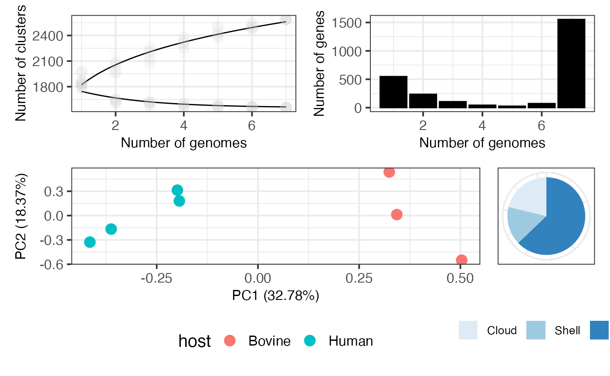

Here we introduce our cookbook which is made of recipes. Each recipe is a customized piece of code to complete different advanced tasks. By using these recipes (or creating new ones) the user can take full profit of functionalities provided by pagoo and easily interact with other R packages to perform a variety of analyses including phylogenetics, pangenome-wide association studies, sequence comparisons, ecological measures, prepare publication-quality figures, among others. If you want to standarize any analysis from your pangenome data that is not covered in this tutorial, we can help you and write a recipe. Contact us!
Start by loading the pagoo object, as in previous tutorials:
library(pagoo) # Load package toy_rds <- system.file('extdata', 'campylobacter.RDS', package = 'pagoo') p <- load_pangenomeRDS(toy_rds)
In the section 5 - Methods and Plots we introduced a set of several plots that pagoo can generate for the basic exploration of pangenome features. These plots are generated using ggplot2, so their aesthetic features can be easily improved. Here we show how pagoo interacts with ggplot2 and some of its extensions to produce publication-quality figures from the previous standard pangenome plots, allowing flexible styling and reproducible generation of figures. Some customization has already been shown in previous tutorials.
library(ggplot2) library(patchwork) # 1. Pangenome curves curves <- p$gg_curves() + # Plot core- and pan-genome curves scale_color_manual(values = c('black', 'black')) + # Customize line colors geom_point(alpha = .05, size = 4, color = 'grey') + # Add semi-transparent data points theme_bw(base_size = 15) + # Customize background theme theme(legend.position = 'none', # Remove legend axis.title = element_text(size = 12), # Customize axis title axis.text = element_text(size = 12)) # Customize axis text size # 2. Gene frequency bar plots bars <- p$gg_barplot() + # Plot gene frequency distribution theme_bw(base_size = 15) + # Customize background color theme(axis.title = element_text(size = 12), # Customize axis label size axis.text=element_text(size = 12)) + # Customize axis text size geom_bar(stat = 'identity', color = 'black', fill = 'black') # Customize bar color and borders # 3. PCA of accessory genes colored by host pca <- p$gg_pca(colour = 'host', size = 4) + # Plot PCA, color by host theme_bw(base_size = 15) + # Customize background theme theme(legend.position = 'bottom') + # Customize legend position theme(axis.title = element_text(size = 12), # Customize axis title axis.text = element_text(size = 12)) # Customize axis text size # 4. Pie chart of core and accessory genes pie <- p$gg_pie() + # Plot pie chart theme_bw(base_size = 15) + # Customize background theme scale_fill_discrete(guide = guide_legend(keywidth = .75, keyheight = .75)) + # Customize fill scale_fill_brewer(palette = "Blues") + # Customize fill color scale_x_discrete(breaks = c(0, 25, 50, 75)) + # Customize axis scales theme(legend.position = 'bottom', # Customize legend position legend.title = element_blank(), # Remove legend title legend.text = element_text(size = 10), # Change legend text size legend.margin = margin(0, 0, 13, 0), # Change legend margins legend.box.margin = margin(0, 0, 5, 0), # Change box margins axis.title.x = element_blank(), # Remove X-axis title axis.title.y = element_blank(), # Remove Y-axis title axis.ticks = element_blank(), # Remove axis ticks axis.text.x = element_blank()) # Remove X-axis text # 5. Use patchwork to arrange plots using math operators (curves + bars) / (pca + pie)

micropan MethodsGiven a panmatrix, you could predict the number of core clusters and the total number of clusters in a pangenome. Several methods have been developed for this purpose, in this case a binomial mixture model implemented by micropan package is used to describe the distribution of gene clusters across genomes in a pangenome.
To use this method, simply pass the object’s pan-matrix to the micropan::binomixEstimate function:
library(micropan) micropan::binomixEstimate(p$pan_matrix)
Given that we are using a very small toy dataset, results here are not really meaningful.
Genomic fluidity is a measure of population diversity. It’s somehow similar to computing jaccard distances, but genomic fluidity describes the whole population whereas jaccard distances are computed pairwise. As above, we are passing the object’s pan-matrix to the micropan::fluidity function. In this case, lets use magrittr’s %>% operator to pipe it, and compute fluidity using 100 random samples:
After you have reconstructed the pangenome, it’s a common practice to use a single representative gene from each cluster to annotate them using a curated database such as COG, EggNOG or KEGG. After doing that, you probably want to add any new information to the pagoo object as cluster’s metadata. In this recipe we show how to extract one representative sequence from each cluster, translate each of them, and use rBLAST package to query a hypothetical blastp database. NOTE: we didn’t include any blast database in the package, the code here is just to illustrate the general idea. Running the following chunk will throw an error.
DEVELOPER NOTE: ADDING METADATA STEP MISSING
# Load required packages if (!require(rBlast)) devtools::install_github('mhahsler/rBLAST') library(Biostrings) library(rBLAST) library(magrittr) db_path <- 'path/to/custom/blastpdb' # Path to custom blastp db db <- blast(db = db_path, type = 'blastp') # Set blastdb blast_result <- p$sequences %>% # Pangenome sequences lapply('[[', 1L) %>% # Subset 1 sequence from each cluster Biostrings::DNAStringSet() %>% # Transform list to DNAStringSet Biostrings::translate() %>% # Translate DNAStringSet rBLAST::predict.BLAST(db, .) # Run blastp. Returns data.frame ### ADD METADATA STEP MISSING
The core genome is composed by those genes that are present in every or almost every genome in the sample. As these genes are present in all genomes, they can be used to extract important biological information like phylogenetic relationships, study recombination or selective pressures. For doing these, core genes need to be aligned. In the next few sections we explain how to do this to perform some of the above mentioned downstream analyses.
To reveal the vertical evolutionary history of a bacterial population we should take into account the presence of horizontal acquisition of genetic material, like by means of recombination, that is mantained by the action of natural selection. Hence, we can use the Tajima’s D test of neutrality as implemented in pegas ( Paradis, 2010) to identify those core genes that are not subjected to strong selective pressures and are likely evolving neutrally.
# Load required packages library(magrittr) library(DECIPHER) library(pegas) library(ape) tajimaD <- p$core_seqs_4_phylo() %>% # Core genome sequences lapply(DECIPHER::AlignTranslation) %>% # Align translation lapply(ape::as.DNAbin) %>% # Transform class to DNAbin lapply(pegas::tajima.test) %>% # Compute Tajima's test sapply('[[', 'D') # Get Tajima's 'D' statistic from each # Which are neutral? which(tajimaD <= 0.2 & tajimaD >= -0.2)
The best practices on how to build a phylogeny from core genomes is a topic of debate. In this first example we provide a one-liner to align individual core genes (like in the previous case), produce a concatenated core genome alignment, calculate a core genome phylogeny using the Neighbor-Joining method as implemented by phangorn (Schliep, 2011), and visualize it using host metadata to colour tree tips using ggtree (Yu et al., 2017). Phylogenetic tree is assigned to the phy variable, and plotted as side effect by using magrittr’s %T>% operator.
# Load required packages library(magrittr) library(DECIPHER) library(Biostrings) library(phangorn) library(ggtree) phy <- p$core_seqs_4_phylo() %>% # Core genome sequences lapply(DECIPHER::AlignSeqs) %>% # Align do.call(Biostrings::xscat, .) %>% # Concatenate alignments setNames(p$organisms$org) %>% # Set sequence names as('matrix') %>% # Transform to matrix phangorn::phyDat(type = 'DNA') %>% # Transform to phangorn's phyDat phangorn::dist.ml() %>% # Compute distance phangorn::NJ() %T>% { # Compute NJ, and assign "phy" { ggtree::ggtree(.) %<+% # Create ggtree as.data.frame(p$organisms) + # Get organisms metadata ggtree::geom_tippoint(aes(colour = host)) + # Add coloured tip points scale_color_brewer(palette = 'Set1') # Set color palette } %>% print() }
The following method is simmilar to the previous, but in this case we are optimizing the topology and branch lengths by maximum likelihood method implemented in phangorn package. Although this is a fully working example, its purpose is just to illustrate the idea. You should consider tuning the parameters to better fit your dataset (e.g.: just 4 discrete gamma distributions for a whole coregenome alignment may be too low).
# Load required packages library(magrittr) library(DECIPHER) library(Biostrings) library(phangorn) library(ggtree) phy <- p$core_seqs_4_phylo() %>% # Core genome sequences lapply(DECIPHER::AlignSeqs) %>% # Align do.call(Biostrings::xscat, .) %>% # Concatenate alignments setNames(p$organisms$org) %>% # Set sequence names as('matrix') %>% # Transform to matrix phangorn::phyDat(type = 'DNA') %T>% # Transform to phangorn's phyDat assign('dat', ., .GlobalEnv) %>% # Assign to "dat" in .GlobalEnv phangorn::dist.ml() %>% # Compute distance phangorn::NJ() %>% # Compute NJ (initial tree) phangorn::pml(data = dat, k = 4) %>% # Compute likelihood with 4 discrete # gamma distributions. phangorn::optim.pml(rearrangement = "stochastic", # Optimize likelihood with # stochastic rearrangements, optGamma = TRUE, # optimize gamma rate parameter, optInv = TRUE, # optimize prop of variable size, model ="GTR") %>% # and use "GTR" model. magrittr::extract2("tree") %T>% { # Extract the tree only, and pass { # it to ggtree. ggtree::ggtree(.) %<+% # Create ggtree as.data.frame(p$organisms) + # Get organisms metadata ggtree::geom_tippoint(aes(colour = host)) + # Add coloured tip points scale_color_brewer(palette = 'Set1') # Set color palette } %>% print() }
Identifying population structure from genomic information is a common problem in microbial ecology. This aims to identify discrete sub-populations within a more heterogeneous population, which is helpful to detect associations with particular phenotypes, geographic origin, host-association, etc. There are various methods for doing this, but probably the most used in microbial genomics is hierBAPS (Cheng et al., 2013) which has been re-implemented in R as rhierBAPS (Tonkin-Hill et al., 2018). In the following recipe we will combine previous examples to 1) align core clusters; 2) compute Tajima’s D statistic over aligned core clusters to identify the ones that are likely to be evolving neutrally; 3) concatenate selected neutral clusters; 4) Run the herBAPS algorithm; 5) extract lineage information and add it to the pagoo object as organism’s metadata; and 6) compute and plot a tree with lineage information as colour tips.
library(magrittr) library(DECIPHER) library(rhierbaps) library(ape) library(phangorn) # 1. Align translation of core genes ali <- p$core_seqs_4_phylo() %>% # Core genome sequences lapply(DECIPHER::AlignTranslation) # Align translation # 2. Identify neutral core clusters tajD <- ali %>% lapply(ape::as.DNAbin) %>% # Transform class to DNAbin lapply(pegas::tajima.test) %>% # Compute Tajima's test sapply('[[', 'D') # Subset D statistic neutral <- which(tajD <= 0.2 & tajD >= -0.2) # 3. Concatenate neutral core clusters concat_neu <- ali[neutral] %>% # Select neutral clusters do.call(Biostrings::xscat, .) %>% # Concatenate alignments setNames(p$organisms$org) %>% # Set sequence names as('matrix') %>% # Transform to matrix tolower() # Translate to lower case # 4. Compute structure rhb <- hierBAPS(snp.matrix = concat_neu, # Input matrix alignment n.pops = 10, # Max number of subpopulations max.depth = 1, # Max depth for hierarchical clustering n.extra.rounds = 5) # Extra rounds to ensure convergence # 5. Add lineage as metadata to organisms in pagoo object res <- rhb$partition.df lin <- data.frame(org = as.character(res[, 1]), lineage = as.factor(res[, 2])) p$add_metadata(map = 'org', data = lin) # 6. Compute tree and plot it with lineage information concat_neu %>% phangorn::phyDat(type = 'DNA') %>% # Transform to phangorn's phyDat phangorn::dist.ml() %>% # Compute distance phangorn::NJ() %>% # Compute NJ ggtree::ggtree() %<+% # Create ggtree as.data.frame(p$organisms) + # Get organisms metadata ggtree::geom_tippoint(aes(colour = lineage)) # Colour tips with lineage info
The following recipe computes accessory genome jaccard’s distance and nucleotide diversity of synonym sites for each pair of genomes, and then plot it with a linear regression curve. This method provides insights of accessory genome adaptative evolution. If both magnitudes are not correlated, it could mean that there are some selective pressures shaping clade’s evolution. It first sets the core_level threshold to 100%, then creates a matrix to store pairwise distances and synonym nucleotide diversities. Accessory genome Jaccard distance between each pair of organisms is computed by a pagoo method which is basically a wrapper of vegan::vegdist function. Then there is a long code block with the method to align each core gene and select their polymorphic synonym sites. With this input, pairwise nucleotide diversity is computed with pegas::nuc.div function. At the end, a correlation between both magnitudes is plotted.
library(magrittr) library(IRanges) library(Biostrings) library(DECIPHER) library(ape) library(pegas) # Set core level to 100%. This recipe only works if this is set to 100%. p$core_level <- 100 # Create pairs matrix pairs <- data.frame(t(combn(nrow(p$organisms), 2))) colnames(pairs) <- c('org1', 'org2') # Compute paired jaccard similarity, transform to matrix jaccard_sim <- as.matrix(p$dist(method = "jaccard", binary = TRUE)) # Fill results matrix pairs$jaccard_sim <- apply(pairs, 1, function(i){ ii <- i[1] jj <- i[2] jaccard_sim[ii, jj] }) # Return only synonymous polymorphic sites. # First, it removes non-synonymous codons, and then retains only # polymorphyc sites. syn_poly_sites <- p$core_seqs_4_phylo() %>% lapply(function(x){ lns <- elementNROWS(x) # Align translatation filtering tali <- x[which(lns != 0)] %>% # truncated codons and returning Biostrings::subseq(1L, lns %/% 3 * 3) %>% # both DNA and AA alignments. DECIPHER::AlignTranslation(type = "both") syno <- tali[[2]] %>% # Identify non-synonymous Biostrings::consensusMatrix() %>% # codons. magrittr::equals(0) %>% magrittr::not() %>% colSums() %>% magrittr::equals(1) %>% which() neut <- tali[[1]] %>% # Remove non-synonymous codons. lapply(function(x){ IRanges::successiveViews( x, rep.int(3L, length(x) %/% 3L)) }) %>% lapply('[', syno) %>% lapply(unlist) %>% Biostrings::DNAStringSet() poly <- neut %>% # Identify polymorphic sites. Biostrings::consensusMatrix() %>% magrittr::equals(0) %>% magrittr::not() %>% colSums() %>% magrittr::is_greater_than(1) %>% which() lapply(neut, '[', poly) %>% # Retain only polymorphic Biostrings::DNAStringSet() # sites }) %>% do.call(Biostrings::xscat, .) %>% # Concatenate. setNames(p$organisms$org) %>% # Set names. ape::as.DNAbin() # Convert to DNAbin class. # Compute paired nucleotide diversity, and fill results matrix pairs$nuc_div <- apply(pairs, 1, function(i){ ii <- i[1] jj <- i[2] pair <- c(syn_poly_sites[ii], syn_poly_sites[jj]) pegas::nuc.div(pair) }) # Plot correlation with R-base graphics plot(jaccard_sim ~ nuc_div, pairs) abline(lm(jaccard_sim ~ nuc_div, pairs))